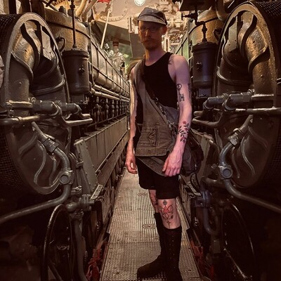
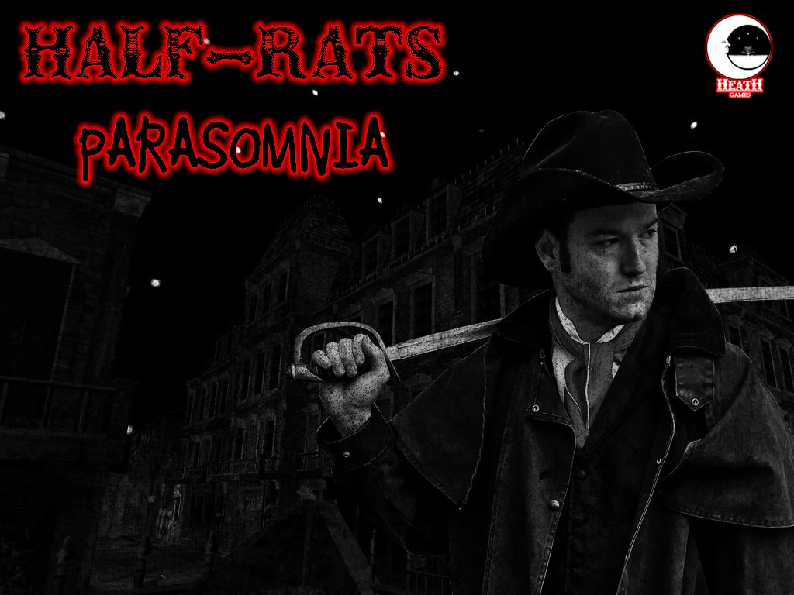

Production and Design Planning
The Deep
VR systems and interaction case study focused on core loop definition, tool design, onboarding, and implementation-facing documentation.
Portfolio

Game designer focused on systems, level flow, VR interaction, documentation, UI / UX, and implementation support.
Shipped work across VR and PC in historical, simulation, strategy, shooter, and multiplayer projects. The strongest entry points below show ownership, documentation, research, and production-facing iteration.
My work usually sits between design intent and implementation: defining features, documenting rules and flows, reviewing work in engine, and iterating with art, engineering, production, and QA until a feature is readable and ready to ship.
Production and Design Planning
VR systems and interaction case study focused on core loop definition, tool design, onboarding, and implementation-facing documentation.

Systems and Creature Design
Feature ownership case study covering ecology systems, onboarding, buddy behavior support, and implementation review across VR / MR development.

Game Design
Enemy and encounter design case study focused on readable destruction gameplay, replay structure, tuning, and implementation support.

Research / Authenticity
Historical research case study focused on reference gathering, packet building, and historically grounded production support.
I have primarily focused on level design for Battle Cry of Freedom, Mount & Blade Community Maps, Half-Rats: Parasomnia, and The Deep, shaping readable spaces, routes, landmarks, and encounter flow across multiplayer, adventure, and simulation work.
I have recently worked on systems design for DinoHab, The Deep, and Monster Simulator 3000, covering interaction rules, player-facing systems, creature behaviors, progression, and implementation support.
I have worked on documentation for every project I have worked on, producing briefs, wireframes, implementation notes, and production-facing specifications for artists, programmers, and QA.
I work closely with other departments to integrate and configure the designs I spec, reviewing content in engine and adjusting setup, values, pacing, and readability until the feature is working cleanly.
Team management is a major secondary aspect of my skillset. I have also worked with IP holders and stakeholder requirements, integrating them into designs to ensure compliance, recognition, and practical production follow-through.
Additional tools and role-specific skills are expanded on the CV page and on each relevant project page.
Broader range across UI, community level design, prototyping, QA, and combat-facing systems.

City-builder design leadership work spanning systems framing, wireframes, documentation, and player guidance for an Early Access strategy project.

Historical multiplayer level design work covering research, blockout, terrain passes, landmarking, and playtest-led iteration.
Research support work focused on practical historical detail, reference packets, and production-facing authenticity guidance.

UI and presentation work focused on flow, readability, and player-facing presentation support.

Co-op prototype work centered on puzzle spaces, collaborative play, and accessible level flow.

QA and usability support work focused on balance review, bug reporting, and readability feedback for horror spaces.

Live multiplayer map work focused on route clarity, sightlines, landmarking, and community-led iteration.

Early VR arena and prototype work spanning implementation support, gameplay tuning, documentation, and QA.
Use the resume for the full CV, the best entry points for the strongest project routes, and the project pages for responsibilities, examples, trailers, and galleries.
The infrastructure of this site is a little old-fashioned, but I feel it has a tactile charm to it. The Lightswitch is at the bottom left - Please remember to turn it off when you leave!
Minor PSA// (Date )
The site appears to have taken on a rather permanent guest.
Inspection of the code shows an errant character is moving between the pages and causing some disruption.
I apologize, it seems mostly benevolent but does not like bright lights.